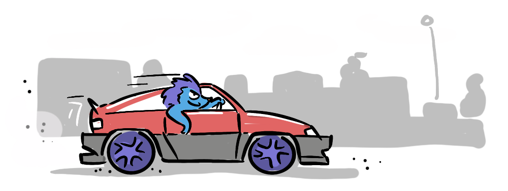
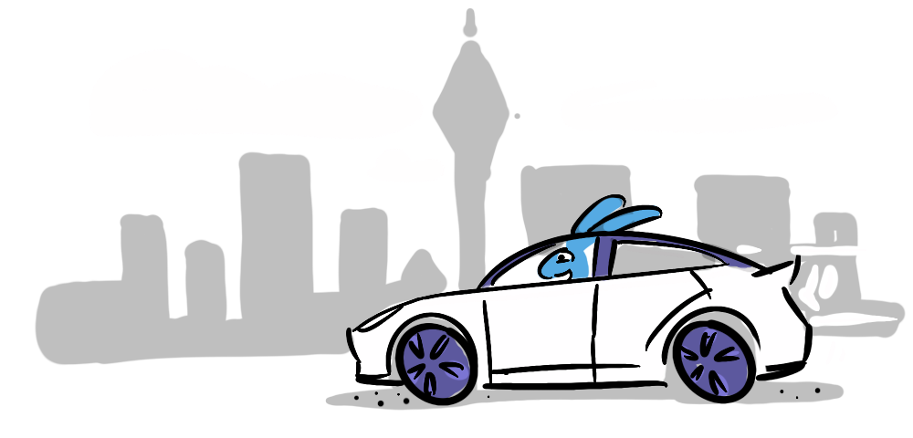

After some feedback that people would like to hear some more stories, I thought I'd mix it up a little this week. The following story is all true, and is adapted from a speech I entered in our local Toastmasters Humorous Speech Competition (and won!).
Have you ever heard of the saying "No matter where you go, there you are"? Throughout my life, I've experienced this as meaning that whatever trappings of success I achieve, whatever signifiers of status I attain, it won't eliminate my internal flaws—they exist independently of achieving my goals, so I better either face them directly or get comfortable with them. I feel like a better formulation is the subtly different…
No matter where you get to , there your are.
The following story embodies this notion. It happened only recently, but it all began many years ago, with a series of crappy cars, and a cosmetic compulsion…
To put this is context, I'm from a small town in New Zealand, where, as a teenager, the factor that determined your success on the streets was… your car. Whether you had one, how much noise its exhaust pipe made, and whether it had a subwoofer. My exhaust was silent and I had no subwoofer because I didn't own a car.
We got our first car in my early 20s—my wife's old family van, for a steal: $700… every 6 months at warrant time. It was a rust-bucket. It was what you might charitably call a "work in progress". It was a real dunger. I would bore out the large corroded holes, bog them, sand them and carefully apply three layers of perfectly matched silver spray paint.
A friend once asked…
"Mate, that's not structural rust, is it? Are you doing this for… cosmetic reasons?"
… the implication being, if I was interested in looks, why was I driving an 88 Toyota Liteace? But my answer was "yes"… it was for cosmetic reasons.
Needless to say, the van didn't last long, and it would be years before we would next need a car to go house-hunting. I remember being asked "James, you're buying a house in Auckland, why are you driving around in a 25 year old Festiva?". My reply was defiant.
Oh, just you wait, Mum . One day, I'm going to have the perfect car.
I restored dignity to the Festiva—touching-up the paint work with nail polish, gaffer-taping the wing mirror (in matching red of course), and fixing the cracked headlight with modelling plastic (I'm basically a mechanic at this point).
Next was the Corolla, I would spray paint the inner wheels black so that when I put my hubcaps on, they'd almost look like real mags—I'd also get an extra set, so I had four replacements for the front left wheel, which I routinely curbed. But my eyes did begin to wander… and that's when I saw it—the dream car. Now, it might better be termed "the nightmare car" due to the its creator's antics: a shiny, white, Tesla Model 3 (before you judge, this was well before he went "Full Elon").
I loved it. 25 years on from those teenage nights in downtown New Plymouth… I had made it . Finally I had a cool car, and all the unworthy adolescent angst and baggage I had carried throughout my life was swept away, I was complete.
And I was so careful—Can you have a drive? No. Can you eat your chicken nuggets in the back, No! Can you turn on the seat heating?… Why yes, I thought you'd never ask…
But old habits die hard. Sneaking into a tight park—CRUNCH—I stooped to inspect my first, ghastly instance of curb rash!
For months it haunted me, a constant reminder of my folly. I would replay it over and over in my mind—if only I'd turned earlier, what if I'd left a minute later?
Sometimes, because it was on the passenger side, I wouldn't see it for days and I'd forget, but then the memory would come flooding back—shining bright silver through the grey veneer.
And then it dawned on me. The skills I had developed over a lifetime of making minor cosmetic touch-ups, had prepared me for this very moment. I would find my old black spray can, and mix it with lead-belcher grey modelling paint to make the perfect tone, to heal the scar and hide my shame.
I responsibly marked up the area, and found a small piece of cardboard to mix the paint on, but when I pressed the nozzle, there was no pressure in the old can, and yet it was still heavy. So, determined to access the paint, I did what
And that is where it all went horribly wrong.
Black paint sprayed straight in my eyes, the can hit the ground spinning like a Tasmanian devil, radiating a hellish black cloud. I pounced—struggling to grasp the wild beast, eventually, wrestling it into submission.
In the silence that followed I stood and looked down at my ruined sneakers, sneakers that had once been bright white… just like my car, right behind me!
A gust of wind had carried the dark swarm into, and all the way over the car. Not an inch was spared from the tiny black spots of fast-drying, hard-wearing enamel.
My wife, who'd heard the commotion, and the only one in command of her faculties, handed me a rag and a bottle of Isopropyl alcohol, and I began frantically scrubbing at the bodywork, making a good start, but progress slowed as the paint began to dry and cure. For two excruciating hours I scrubbed, all the while thinking…
No matter where you get to, there you are.
I did eventually get the car clean, and later did get around to fixing the curb rash, but every now and again, I notice, a lone black speck, on the windshield, or under the boot handle, and I am reminded that you never truly make it...
... you're always a work in progress.